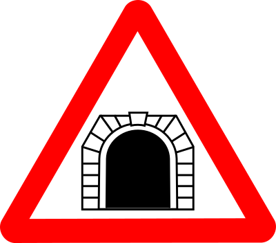

Problem
A train is 1000 metres long. It is travelling at a constant speed, and approaches a tunnel that is \(3000\) metres long. From the time that the last car on the train has completely entered the tunnel until the time when the front of the train emerges from the other end, 30 seconds pass.
Determine the speed of the train, in kilometres per hour.

Solution
A diagram to represent the problem will make it easier to visualize.
At the time the entire train is just inside the tunnel, there is \(3000-1000=2000\) metres left to travel until the front of the train emerges from the other end. The train has to travel \(2000\) metres in \(30\) seconds. We can calculate the speed of the train by dividing the distance travelled by the time required to travel the distance.
The speed of the train is \(2000 \text{ m } \div 30 \text{ seconds }=\dfrac{200}{3}\) m/s.
Now our task is to convert from m/s to km/h. We will do this in two steps: first convert metres to kilometres and then convert seconds to hours.
\(\dfrac{200\text{ m}}{3\text{ s}}=\dfrac{200\text{ m}}{3\text{ s}}\times \dfrac{1\text{ km}}{1000\text{ m}}=\dfrac{200\text{ km}}{3000\text{ s}}=\dfrac{1\text{ km}}{15\text{ s}}\)
\(\dfrac{1\text{ km}}{15\text{ s}}=\dfrac{1\text{ km}}{15\text{ s}}\times \dfrac{60\text{ s}}{1\text{ min}}\times \dfrac{60\text{ min}}{1\text{ h}}=\dfrac{3600\text{ km}}{15\text{ h}}=\dfrac{240\text{ km}}{1\text{ h}}\)
The train is travelling at a speed of \(240\) km/h.